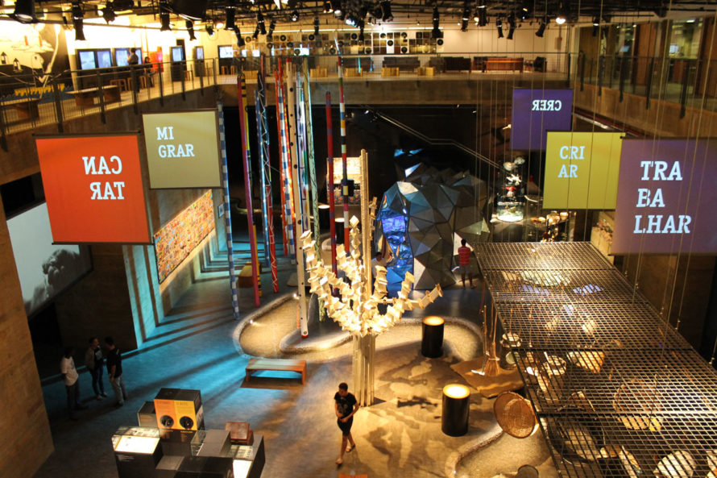

Recife Antigo
O nome oficial é Bairro do Recife, mas todo mundo chama mesmo é de Recife Antigo – ou, quando começa a intimidade, só “Antigo” mesmo. Charles Darwin, Santos Dumont e Dom Pedro II estão entre os personagens ilustres que já desembarcaram num dos pedaços mais interessantes da capital pernambucana, e você não vai perder a chance de entrar pra essa lista, né? Afinal, esse bairro por si só já faz valer no mínimo um dia na cidade antes de você correr pras praias dos arredores.
Além de caminhar sem rumo pelas ruas de paralelepípedos, lembrando sempre de olhar pra cima pra paquerar os prédios históricos, um dia no Recife Antigo inclui um punhado de atrações massa, sem falar nos bons bares e restaurantes.
Se você continuar caminhando passando pelo Centro de Artesanato vai chegar num prédio marrom onde fica o museu Cais do Sertão. Superinterativo e lindo, ele mistura o tradicional e o moderno pra retratar a cultura do Sertão nordestino e a vida do grande Luiz Gonzaga.
De lá, volte um pouco em direção à Praça do Arsenal, onde fica a Torre Malakoff, espaço cultural que abriga exposições, um observatório astronômico e um mirante. Nos finais de semana às vezes é colocado um palco ali, com bandas e apresentações de dança, mas o destaque permanente da praça é o Paço do Frevo, outro museu de dar orgulho.
Dedicado à perpetuação da memória desse ritmo tão pernambucano, o museu traz fotos, estandartes, janelonas com trechos de músicas icônicas e até um Glossário do Carnaval, explicando o significado de termos como “evoé” e “abre-alas”. Se não sair de lá apaixonado pelo frevo e doido pra marcar uma próxima visita a Pernambuco pra época do Carnaval, no mínimo você vai levar fotos lindas de recordação.